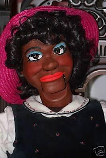

Col. Joe Boley figure
10/3/2009
{kind=link}

Question: Hi Clinton, The latest figure I won on ebay just arrived. It's signed "Col. Joe Boley 2007" on the inside of her head. I have heard of Col. Bill Bloey but I have never heard of Col. Joe Boley, maybe they are relatives? Originally this was an African American female figure, but I want to do some re sculpting on her then send her to you for a repaint and new eyes and some control repair. I want to make her a Caucasian female figure. I ordered her glass eyes, they should be done in 2 weeks. The control for her mouth is loose. She has eyelids. She will need new eyelashes also. What do you think her head is made of? It's a lightweight material that feels like wood.
* * * * *
Answer: Joe Boley is the son of Bill Boley. Bill was the better figure maker (my opinion) but Joe has done a lot of work as well. I have ideas about how the head is made but I'll wait to study the inside before I can tell you for certain. I think I could make the mouth fit better, and a repaint will work wonders, as it does most characters.